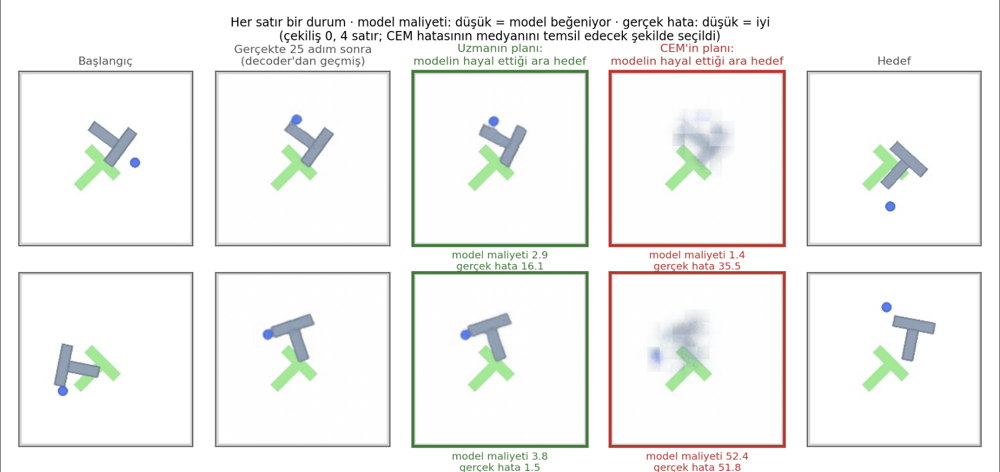
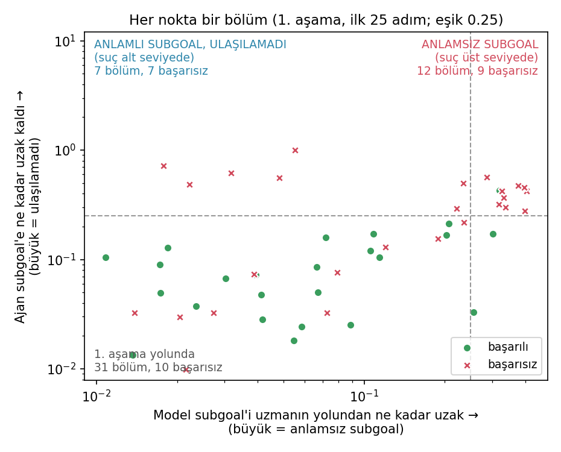

PushT: mavi daire robot, gri T itilecek blok, yeşil T hedef konum.
Hi-LeWM · inzva final sunumu
Ekibimiz
Üç kişiyiz, tek bir soru peşindeyiz.
DE
Defne Erkan
ON
Oğuz Nurlu
AI ve IoT, Bilgisayar Mühendisliği, TOBB ETÜ ve DCU Mezunu
AA
Arda Alpay
inzva AI projects · açık kaynak stable-worldmodel platformu üzerine kuruldu
Giriş · Problem tanımı
PushT görevi: mavi daire gri T'yi iterek hedef konuma getirir.
İki boyutlu ve basit görünen bir görev. Hem konum hem yön doğru olmalı.
Peki neden zor? Yanlış bir itişi geri almak zor oluyor. T bir kez kötü bir yere giderse, düzeltmek uzun sürüyor.
Yani robot önce düşünmek zorunda. Önceden düşünmeye planning diyoruz.
Bir episode, gerçek hızında.
PushT · standart bir robot öğrenme benchmark'ı
Literatür taraması
Önceki çalışmalar
Beş çalışma, her birinin bu projedeki rolüyle.
World ModelsHa ve Schmidhuber, 2018 · arXiv 1803.10122Terimin kaynağı. “Cheating the World Model” bölümünde planner'ın modelin hatalarını sömürdüğü gösteriliyor.Bulgu 1'in atası
LeWMMaes ve ark., 2026 · arXiv 2603.19312Piksellerden uçtan uca öğrenilen, kompakt bir latent world model.Hi-LeWM'in frozen low-level'ı
Hi-LeWM“Mind the Gap” · Caselli ve ark. · arXiv 2607.12547LeWM'e bir high-level ekliyor: macro-action'larla subgoal planlıyor.İncelediğimiz model; yazarların eğitilmiş hâli
DINO-WMZhou ve ark. · arXiv 2411.04983Frozen DINOv2 özellikleri üzerinde çalışan bir world model.GRU modelimizin baseline'ı
HWMZhang ve ark., 2026 · arXiv 2604.03208Uzun ufuklu modelin tahmini, kısa ufuklu modelin subgoal'u oluyor.Hi-LeWM'in subgoal arayüzünün kaynağı
UyarıBulgularımız hiyerarşinin genel bir sınırını göstermiyor. Biz yalnızca bu kurulumu inceliyoruz.
Altyapı: stable-worldmodel (arXiv 2605.21800), Hi-LeWM kodunun dayandığı açık kaynak platform
Veri seti
PushT expert demonstration'ları. Reward yok.
18,685
episode
Her biri, expert'in T'yi hedefe götürdüğü tam bir çözüm.
2,336,736
frame
Her biri 224×224 RGB görüntü ve 2 boyutlu bir action, yani itiş yönü.
123
medyan adım
Episode uzunluğu 49 ile 246 adım arasında değişiyor.
En önemli nokta: reward yok. Veride yalnızca görüntü ve action var. Model “iyi mi, kötü mü” bilgisini hiç görmüyor; yalnızca expert'in ne yaptığını görüyor.
PushT expert verisi, eğitim kümesi.
Pipeline
World model: robotun kafasındaki simülatör.
Robot bir itişi gerçekte yapmak zorunda kalmıyor. Kafasında deniyor, sonucu görüyor, kötüyse vazgeçiyor. Hem ucuz hem risksiz.
DikkatBu model bir tahmin oluyor. Yani yanılabilir. Bunu sunumun sonuna kadar aklımızda tutacağız.
Şematik çizim
Pipeline
Görüntü yerine kısa bir özet: 192 sayılık latent.
Ham görüntü büyük: 224×224 piksel, üç renk kanalı. Görüntüyü özete çeviren parçanın adı encoder. Bu özetlerin yaşadığı uzay da latent space: hayal etmek ve planning burada oluyor, piksellerde değil.
UyarıLatent'leri gözle okuyamıyoruz. Bakmak için onları decoder'dan geçirip tekrar görüntüye çevirmek gerekiyor. O görüntüler bu yüzden biraz bulanık olacak.
Şematik çizim; çubuklar temsilidir
Pipeline
CEM ile planlama: rastgele planlar dene, en iyileri tut, tekrarla.
1
Üret
Rastgele bir sürü plan üretiriz. Plan, burada T'yi iteceğimiz adımlar oluyor.
2
Score ver
Her planı world model'da deneriz ve hedefe ne kadar yaklaştığına göre bir score veririz.
3
Ele
En iyi score alanları tutarız.
4
Daralt
Yeni planları bu en iyilerin çevresinden üretiriz, sonra 2. adıma döneriz.
CEM, Cross-Entropy Method oluyor. Planlar her turda en iyilere doğru converge eder.
Önemli“En iyi”, modelin tahminine göre en iyi demek. Model yanılıyorsa, CEM o yanılgıya doğru converge eder. Buraya bulgularda geri döneceğiz.
Temsili şema; gerçek veriden üretilmedi
Pipeline
Hiyerarşi: high-level subgoal seçer, low-level ona iter.
High-level uzak hedefi parçalara bölüyor; subgoal, yol üstündeki bir ara durak oluyor. İtişleri tek tek değil, 25 adımlık paketler hâlinde düşünüyor: bu pakete macro-action diyoruz.
Başlangıç0. adım
→macro-actionlow-level iter · 25 adım
Subgoal25. adım
→macro-actionlow-level iter · 25 adım
Hedef50. adım
Başarılı bir örnek: subgoal'lar makul görünüyor ve agent hedefe varıyor. Hiyerarşinin işe yaradığı hâl bu oluyor. Peki hep böyle mi oluyor?
“Geçtik” ya da “yakaladık” demiyoruz. Amacımız en baştan beri daha küçük bir modelle yine yüksek performans elde etmekti. Parametre, modelin öğrenebildiği değişken sayısı; yani model boyutunun ölçüsü.
İki ölçüm de 50 episode, 300 sample, 30 CEM adımı, seed 0/1/2, aynı GPU · DINO-WM parametreleri: arXiv 2411.04983 ve DINOv2 deposu
2. aşama · soru
High-level iyi subgoal seçiyor mu?
İpucu: modelin gözünde evet.
Ama modelin gözü ile gerçek aynı şey olmayabiliyor. Şimdi nasıl incelediğimize bakıyoruz.
2. aşama · yöntem
Hi-LeWM'i yeniden eğitmedik. Yazarların modelini kullandık.
Soru 1
Planner'ın seçtiği subgoal, modelin score'uyla gerçekte ne kadar uyuşuyor?
Soru 2
Environment'ta başarısız episode'larda suç hangi seviyede: high-level'da mı, low-level'da mı?
Güven için makalenin iki sayısını yeniden ürettik:
%36.0
makale: %38.7
Hi-LeWM'in kendi planner'ı ile
%70.0
makale: %73.3
Expert'in subgoal'ları ile
Environment'ta ölçüldü · 50 episode, seed 42, d = 50, 100 adım bütçe
Deneysel sonuçlar
Bulgu 1: planner modeli kandırıyor.
Modelin score'una göre
CEM'in planı, expert'inkinden
9.5×daha iyi
Draw'lar arası aralık 2.6× – 24.7×
Gerçek duruma göre
CEM'in subgoal'u, expert'inkinden
18.4×daha kötü
25 adım sonraki gerçek duruma uzaklık
Model ile gerçek ters yönde. CEM, durumların %81'inde modele göre expert'i geçiyor — ama bu, daha iyi plan bulduğu anlamına gelmiyor. Modelin yanıldığı yeri bulduğu anlamına geliyor.
Modelin içinde ölçüldü (latent space), environment sonucu değil · medyan, 10 draw × 16 durum, d = 50
Deneysel sonuçlar
Aynı bulguyu bir de gözle görelim.

Expert'in subgoal'u
Net bir T, doğru yerde. Model maliyeti yüksek.
CEM'in subgoal'u
Gri bir leke; T'nin şekli dağılmış. Ama model bu lekeyi daha çok beğeniyor.
Bu, az önceki 9.5× ve 18.4×'in görüntüsü.
Kareler decoder'dan geçtiği için bulanık; karşılaştırma bulanık ile bulanık arasında
Deneysel sonuçlar
Subgoal'ın kaynağını değiştirmek 22 puan etkiliyor.
Deney
Aynı low-level, aynı 50 episode. Tek fark subgoal'ların kaynağı: bir koşulda model üretiyor, diğerinde expert.
Anlamlılık
p = 0.035 (McNemar). Farklı sonuç veren episode'ların 17'si expert lehine, 6'sı model lehine.
Threshold'suz ölçüm
Başarısız episode'larda hedefe giden yolun kat edilen kısmı (medyan): modelin subgoal'ları ile 0.12, expert'inkilerle 0.76.
Environment'ta ölçüldü · tek seed (42), 50 episode · ikisi de staged execution, 100 adım bütçe, d = 50
Deneysel sonuçlar
Bulgu 2: iki köşe, iki tür başarısızlık.

Sağ üst köşe · anlamsız subgoal
Subgoal, expert'in yolundan çok uzak. Suç high-level'da. İlk 25 adımda bu gruptan 12 episode var.
Sol üst köşe · ulaşılamayan subgoal
Subgoal makul, expert'inkine yakın. Ama agent yine de ona ulaşamıyor. Suç low-level'da. Bu gruptan 7 episode var.
Bu ayrım threshold'a bağlı: 0.25 seçtik. 0.10 olsaydı anlamsız sayısı 14, 0.50 olsaydı 0 olurdu. 12 ve 7'yi kesin sayı olarak değil, bir resim olarak sunuyoruz.
Her nokta bir episode · yeşil başarılı, kırmızı başarısız · environment'ta ölçüldü, tek seed, 50 episode, threshold 0.25
Sonuçlar
İkinci aşamadan iki sonuç çıkıyor.
BULGU 1
Planner, modelin hatalarını sömürüyor.
Modelin score'u ile gerçek ters yönde: modelin içinde CEM'in planı 9.5× daha iyi görünüyor, gerçekte subgoal 18.4× daha kötü.
BULGU 2
Başarısızlıklar iki kaynaklı.
Anlamsız subgoal'u olan 12 episode'un 9'u başarısız; expert'in subgoal'ları 7'sini kurtarıyor. Makul ama ulaşılamayan subgoal'u olan 7 episode'un 7'si başarısız; expert'in subgoal'ları yalnızca 3'ünü kurtarıyor.
Çıkarım: yalnızca high-level'ı düzeltmek yetmez. Low-level'ın subgoal'a ulaşma becerisi de ayrıca ele alınmalı.
Environment sonuçları tek seed, 50 episode · 12 ve 7 ayrımı 0.25 threshold'una bağlı · 9.5× ve 18.4× modelin içinde ölçüldü
Gelecek çalışma
Future work olarak dört adım düşünüyoruz.
01
Daha fazla seed, daha uzak hedef.
Sonuçlarımız tek seed ve 50 episode'a dayanıyor. d = 50 ile çalıştık; d = 75 gibi daha uzak hedeflerde ne olacağını görmek istiyoruz.
02
Search'ü veriye bağlayan yöntemleri denemek.
Hi-LeWM-C, CEM'in search'ünü training data'nın daha uygun olan bölgesine bağlıyor. Biz bunu environment'ta denemedik.
03
Low-level'ın subgoal'a ulaşma becerisini ölçmek.
Sol üst köşedeki episode'lar bunun ayrıca ölçülmesi gerektiğini gösteriyor.
04
GRU modelimizi biraz büyütmek.
Parametre sayısını artırıp daha geniş horizon için bir high-level model eğitmek. Horizon, modelin ileriye bakış aralığı. Hedefimiz hâlâ modeli küçük tutmak.